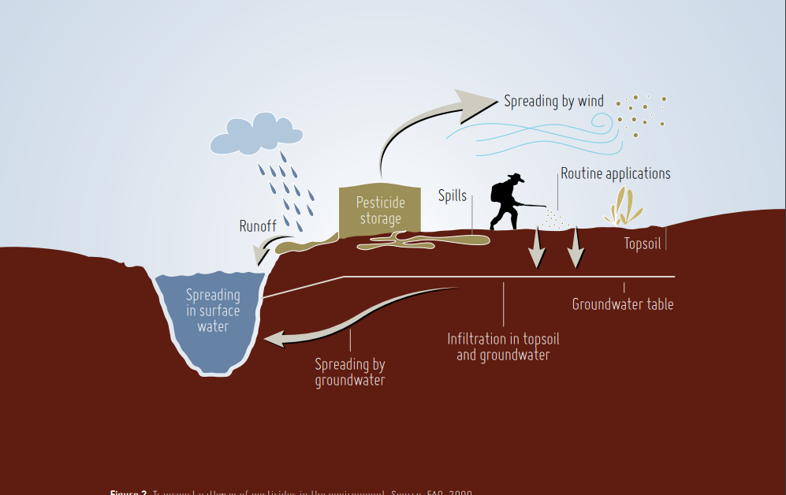
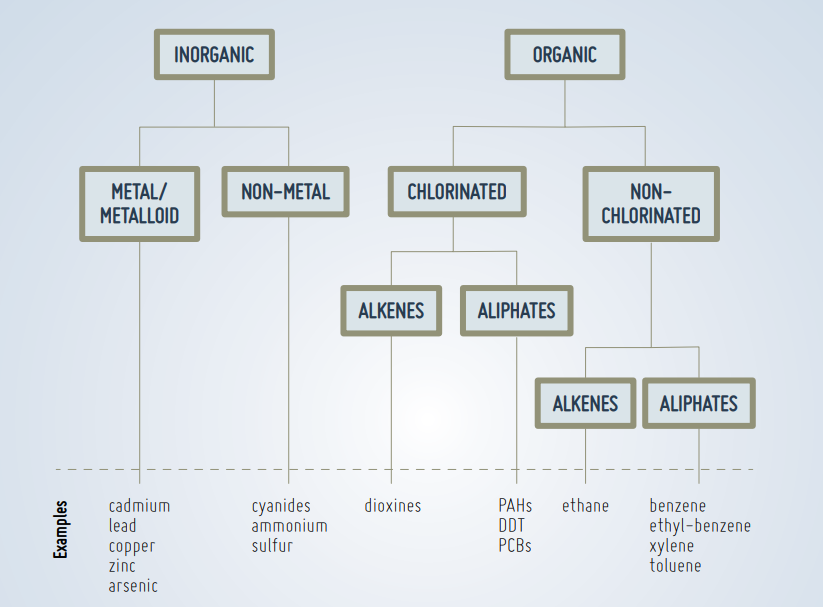

“Soil pollution” refers to the presence of a chemical or substance out of place and/ or present at a higher than normal concentration that has adverse effects on any non-targeted organism (FAO and ITPS, 2015). Although the majority of pollutants have anthropogenic origins, some contaminants can occur naturally in soils as components of minerals and can be toxic at high concentrations. Soil pollution often cannot be directly assessed or visually perceived, making it a hidden danger. The diversity of contaminants is constantly evolving due to agrochemical and industrial developments. This diversity, and the transformation of organic compounds in soils by biological activity into diverse metabolites, make soil surveys to identify the contaminants both difficult and expensive. The effects of soil contamination also depend on soil properties since these control the mobility, bioavailability, and residence time of contaminants (FAO and ITPS, 2015). Industrialization, wars, mining and intensification in agriculture have left a legacy of contaminated soils around the world (Bundschuh et al., 2012; DEA, 2010; EEA, 2014; Luo et al., 2009; SSR, 2010). Since urban expansion, soil has been used as a sink for dumping solid and liquid wastes. It was considered that once buried and out of sight, the contaminants would not pose any risk to human health or the environment and that they would somehow disappear (Swartjes, 2011). The main sources of soil pollution are anthropogenic, resulting in the accumulation of contaminants in soils that may reach levels of concern (Cachada, Rocha-Santos and Duarte, 2018). Soil pollution is an alarming issue. It has been identified as the third most important threat to soil functions in Europe and Eurasia, fourth in North Africa, fifth in Asia, seventh in the Northwest Pacific, eighth in North America, and ninth in sub-Saharan Africa and Latin America (FAO and ITPS, 2015). The presence of certain pollutants may also produce nutrient imbalances and soil acidification, two major issues in many parts of the world, as identified in the Status of the World’s Soil Resources Report (FAO and ITPS, 2015). The unique global estimate of soil pollution was done in the 1990s by the International Soil Reference and Information Centre (ISRIC) and the United Nations Environment Programme (UNEP), which estimated that 22 million hectares had been affected by soil pollution (Oldeman, 1991). Latest data, however, indicate that this number may underestimate the nature and extent of the problem. National attempts to estimate the extent of soil pollution have been undertaken mainly in developed countries. According to the Chinese Environmental Protection Ministry, 16 percent of all Chinese soils and 19 percent of its agricultural soils are categorized as polluted (CCICED, 2015). There are also approximately 3 million potentially polluted sites in the European Economic Area and cooperating countries in the West Balkans (EEA-39) (EEA, 2014) and more than 1 300 polluted or contaminated sites in the United States of America (USA) are included on the Superfund National Priorities List (US EPA, 2013). The total number of contaminated sites is estimated at 80 000 across Australia (DECA, 2010). While these numbers are informative in helping us understand the effects of certain activities on soils, they do not reflect the complete extent of soil pollution around the world, and they highlight the inadequacy of available information and the differences in registering polluted sites across geographic regions (Panagiotakis and Dermatas, 2015). In low- and middle-income countries, the lack of data and information makes one of the world’s biggest global problems invisible to the international community. With this overview, it is evident that there is an urgent need to implement a global assessment of soil pollution. Fortunately, awareness on the importance of soil pollution is increasing around the world, leading to an increase in research conducted on the assessment and
WHAT IS SOIL POLLUTION?
1.1 INTRODUCTION


The term “soil contamination” has frequently been used as a synonym for soil pollution. The Intergovernmental Technical Panel on Soils (ITPS) under the Global Soil Partnership (GSP) has formalized definitions of the two terms (FAO and ITPS, 2015). Soil contamination occurs when the concentration of a chemical or substance is higher than would occur naturally but is not necessarily causing harm. Soil pollution, on the other hand, refers to the presence of a chemical or substance out of place and/or present at a higher than normal concentration that has adverse effects on any non-targeted organism. One issue is the difficulty in establishing a definition of “normal concentrations.” It can be easier to establish hazardous concentrations for human-made substances that do not naturally occur in soils, but it can be challenging to do the same for heavy metals and metalloids, which can originate from the weathering of rocks and minerals. In that case, the parent material, climate and weathering rate need to be taken into consideration before establishing thresholds. Additionally, land use and management practices can affect background levels of substances occurring in soils. When referring to recommended levels, there are also many differences from country to country and among regions, not only about the value itself, but also about the name used to define it, including screening values, threshold values, acceptable concentrations, target values, intervention values, clean-up values, and many others (Beyer, 1990; Carlon et al., 2007; Jennings, 2013). For that reason, to carry out a global study on the actual state of soil pollution and to be able to make comparisons is extremely complex. However, this is one of the main challenges when making a regional or global assessment of soil pollution. Agreement among scientists regarding concepts and definitions would help policy-makers and stakeholders to identify other strategies and techniques used in different parts of the world to assess and to address soil pollution. Using a common and a simplified language would also lead to better understanding of the issue of soil pollution.
1.2 | POINT-SOURCE AND DIFFUSE SOIL POLLUTION
Soil pollution, as has been said, can result from both intended and unintended activities. These activities can include the direct deposition of contaminants into the soil as well as complex environmental processes that can lead to indirect soil contamination through water or atmospheric deposition (Tarazona, 2014). In the following sections, the different types of soil pollution are described.
1.2.1 | POINT-SOURCE POLLUTION
Soil pollution can be caused by a specific event or a series of events within a particular area in which contaminants are released to the soil, and the source and identity of the pollution is easily identified. This type of pollution is known as point-source pollution. Anthropogenic activities represent the main sources of point-source pollution. Examples include former factory sites, inadequate waste and wastewater disposal, uncontrolled landfills, excessive application of agrochemicals, spills of many types, and many others. Activities such as mining and smelting that are carried out using poor environmental standards are also sources of contamination with heavy metals in many regions of the world (Lu et al., 2015; Mackay et al., 2013; Podolský et al., 2015; Strzebońska, Jarosz-Krzemińska and Adamiec, 2017). Other examples of point-source pollution are aromatic hydrocarbons and toxic metals, which are related to oil products. The sites range from leakage from tank installations in Greenland, which caused aromatic hydrocarbon and toxic metal levels that exceeded the Danish environmental quality criteria (Fritt-Rasmussen et al., 2012), to accidental leakage from oil refinery storage tanks in Tehran (Bayat et al., 2016). Point-source pollution is very common in urban areas. Soils near roads have high levels of heavy metals, polycyclic aromatic hydrocarbons, and other pollutants (Kim et al., 2017; Kumar and Kothiyal, 2016; Venuti, Alfonsi and Cavallo, 2016; Zhang et al., 2015b). Old or illegal landfills, where waste is not disposed of properly or according to its toxicity (e.g. batteries or radioactive waste), as well as disposal of sewage sludge and wastewater, can also be important point-source pollutants (Baderna et al., 2011; BaumanKaszubska and Sikorski, 2009; Swati et al., 2014). Finally, point-source pollution caused by industrial activities can pose risks to human health. For example, over 5 000 brownfields in China are currently affecting the health of their inhabitants (Yang et al., 2014). Urban brownfields, located in urban centres, are sites that once harboured industrial activities that have since been relocated.
1.2.2 | DIFFUSE POLLUTION
Diffuse pollution is pollution that is spread over very wide areas, accumulates in soil, and does not have a single or easily identified source. Diffuse pollution occurs where emission, transformation and dilution of contaminants in other media have occurred prior to their transfer to soil (FAO and ITPS, 2015). Diffuse pollution involves the transport of pollutants via air-soil-water systems. Complex analyses involving these three compartments is therefore needed in order adequately to assess this type of pollution (Geissen et al., 2015). For that reason, diffuse pollution is difficult to analyze, and it can be challenging to track and to delimit its spatial extent. Many of the contaminants that cause local pollution may be involved in diffuse pollution, since their fate in the environment is not well understood (Grathwohl and Halm, 2003). Examples of diffuse pollution are numerous and can include sources from nuclear power and weapons activities; uncontrolled waste disposal and contaminated effluents released in and near catchments; land application of sewage sludge; the agricultural use of pesticides and fertilizers which also add heavy metals, persistent organic pollutants, excess nutrients and agrochemicals that are transported downstream by surface runoff; flood events; atmospheric transport and deposition; and/or soil erosion (Figure 2). Diffuse pollution has a significant impact on the environment and human health, although its severity and extent are generally unknown. It has been widely demonstrated that the upper layers of soil are enriched in many metals and other elements that are linked to atmospheric deposition from natural and anthropogenic sources (Blaser et al., 2000; Steinnes et al., 1997; Steinnes, Berg and Uggerud, 2011). Almost every soil of the northern hemisphere contains radionuclides in higher concentrations than the background level, even in remote areas of North America and Eastern Asia. Due to the nuclear fallout after the catastrophic Chernobyl accident, radionuclides will be present in soils for centuries (Fesenko et al., 2007). More than 50 years will be needed to reach a reduction of 50 percent of the radionuclides, such as 239/240 Pu or 241Am, in areas up to 200 km away from Chernobyl. Due to these different types of pollution from diverse sources, an increase in scientific and technical efforts is needed to develop new methods for measuring, monitoring and better understanding atmospheric deposition processes and the extent of diffuse pollution.
1.3.0 | EFFECT OF SOIL POLLUTION
Soil pollution affects soil fertility; this jeopardises food security, which is essential for human survival. It also poses risks to human health — both indirectly through the consumption of contaminated food and drinking water, and directly through exposure to contaminated soil. Soils can become polluted in various ways. For example, repeated pesticide application is a significant issue because it lowers soil biodiversity and resilience, and could lead to the contamination of food and feed. The zero pollution action plan sets targets of a 50% reduction in the use of chemical pesticides and the risks they pose, and a 50% reduction in the use of more hazardous pesticides by 2030 (for more information, see the zero pollution production and consumption section). Excess nutrients are another source of soil pollution. They lead to ecosystem eutrophication and reduced biodiversity, and result from fertiliser and manure application or from the deposition of certain air pollutants. The zero pollution action plan sets a target to reduce nutrient losses related to excessive nutrient application by at least 50% by 2030 (for more information, see the zero pollution analysis on nutrient losses). Another target which will promote healthier soils requires a reduction of 25% in the area of land impacted by air pollution; this target is assessed in the air and ecosystems section. The EU soil strategy for 2030 reiterates the zero pollution target that, by 2050, soil pollution should be so low that it no longer harms human health (EC, 2021). The strategy prioritises preventing pollution at its source, which aligns with the zero pollution hierarchy. The soil strategy proposes a future soil health law; this is expected to include provisions on identifying, keeping an inventory of and remediating contaminated sites — significantly reducing risks as a result.
Preventing Soil Pollution
The release of pollutants to the environment, as has been mentioned, usually originates from anthropogenic processes. Even if some elements and compounds occur naturally in soils, human interventions are the main drivers of soil pollution. The following sections discuss only a small subset of the most common pollutants affecting agricultural areas, and the properties that make these compounds pollutants. Pollutants have been divided by their chemical characteristics, but some of the categories presented here overlap. Swartjes proposed a systematic categorization of pollutants (Figure 5) that may be useful in better understanding them (Swartjes, 2011).
The term “heavy metals” refers to the group of metals and metalloids of relatively high atomic mass (>4.5 g/cm3 ) such as Pb, Cd, Cu, Hg, Sn, and Zn, that can cause toxicity problems. Other non-metals that are often considered together with heavy metals include As, antimony (Sb) and selenium (Se) (Kemp, 1998). These elements naturally occur at low concentrations in soils. Many of them are essential micronutrients for plants, animals and humans, but at high concentrations may cause phytotoxicity and harm human health because of their non-biodegradable nature, which causes them to readily accumulate in tissues and living organisms. The main anthropogenic sources of heavy metals are industrial areas, mine tailings, disposal of high metal wastes, leaded gasoline and paints, application of fertilizers, animal manures, sewage sludge, pesticides, wastewater irrigation, coal combustion residues, spillage of petrochemicals, and atmospheric deposition from varied sources (Alloway, 2013). Heavy metals are the most persistent and complex kind of pollutants to remediate in nature. They not only degrade the quality of the atmosphere, water bodies, and food crops, but also threaten the health and well-being of animals and human beings. Metals accumulate in the tissues of living organisms because unlike most organic compounds they are not subject to metabolic breakdown. Among the heavy metals, Zn, Ni, Co, and Cu are relatively more toxic to plants, and As, Cd, Pb, Cr and Hg are relatively more toxic to higher animals (McBride, 1994). The most important elements to consider in terms of food-chain contamination are As, Cd, Hg, Pb and Se (McLaughlin, Parker and Clarke, 1999). The main sources of As in soils are agrochemical compounds and mining and smelting activities, but they can also be introduced in manure originating from livestock feed with As-rich additives. Some parent materials are rich in As and therefore their weathering can also be a source of As in high concentrations. Trace metals from inorganic (Cu-based) and organic pesticides represent a major environmental and toxicological concern (Komárek et al., 2010). Cu is easily immobilized by soil organic matter (SOM) and Fe- and Mn-(hydro)oxides, remaining at high concentrations on upper layers of soils. However, fungicide-derived Cu has been found in large amounts in the potentially available fraction of the soil (Pietrzak and McPhail, 2004).